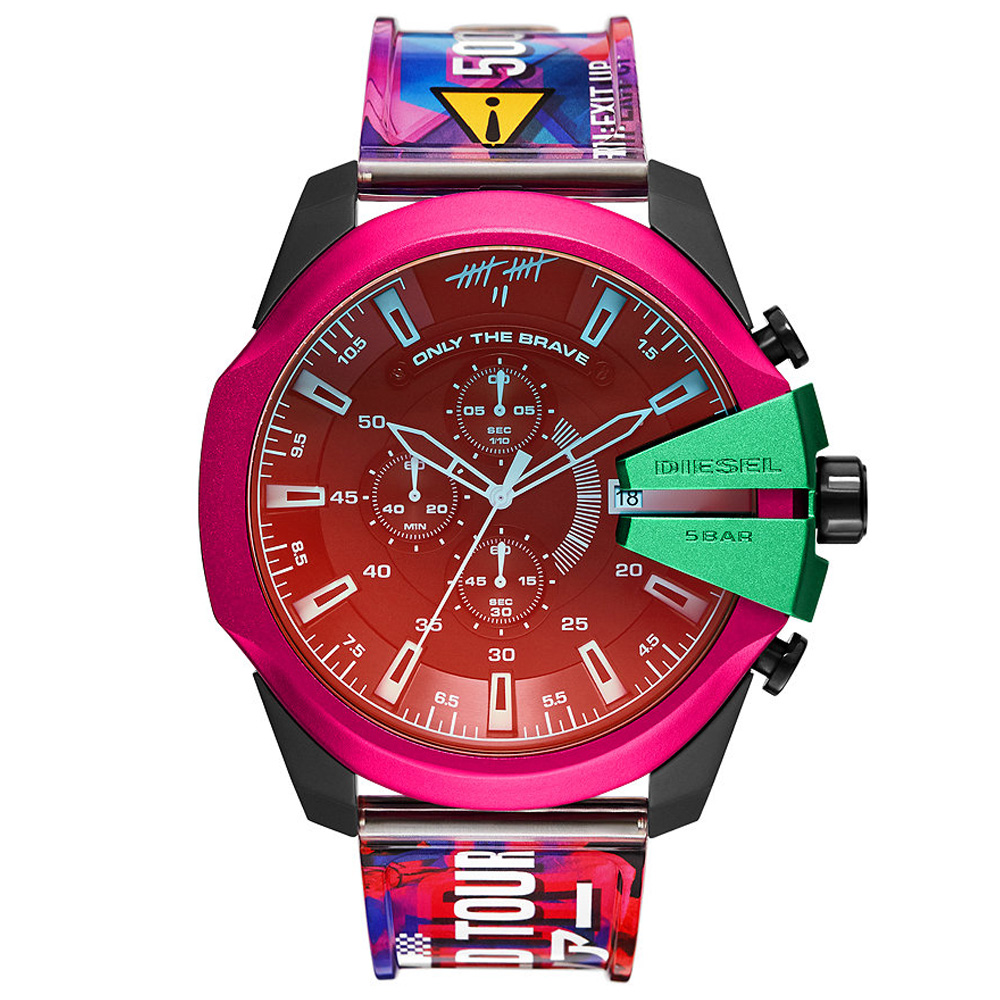

Alüminyum / Quartz Teknoloji / 51 mm Kasa Çapı / Yuvarlak Kasa Şekli / Mineral Cam Özellik / 5 ATM Su Geçirmezlik
1978’den beri denim denilince ilk akla gelen markalardan olan Diesel, saat ve diğer aksesuarları ile de markasının sahip olduğu tarzı yansıtmaya devam ediyor... Dieselin cesur, asi ve havalı kimliği yıllardır denim kumaşı kullandığı kıyafetleri ile özdeşleşiyor. Taşıyanın kendi kimliği ile bütünleştirdiği tasarımları ile denim modasının öncüsü olmaya devam ediyor. Trendleri takip eden değil yaratan, asi ruhlu ve asla utangaç olmayan kimliğini tasarımlarına yansıtan Diesel, aksesuarları ile de bu çizgisini sürdürüyor. Farklı görüntüsü ile kendisini sürekli geliştiren bir stile sahip olduğunu gösteriyor. Özellikle genç neslin özgür ruhunu ve özgüvenini ortaya çıkarmasına yardımcı olan Diesel, markayı kullananların sürekli gelişimini de göz önünde bulundurarak onlar ile birlikte hareket etmeyi kendisine ilke ediniyor. Diesel saatleri ile de markanın kendine güvenen, iddialı kişiliği ön plana çıkıyor. Diesel saatler, özgür ruhunu açığa çıkarmak isteyenlerin ilgisini çekecek modellere sahip. Böylece onu tercih edenlerin, her ortamda alternatif tarzını yansıtmasını sağlıyor.